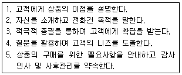
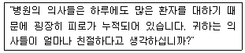
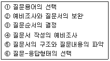
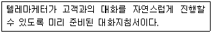
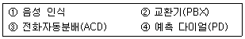
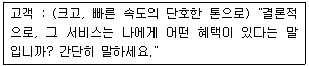

텔레마케팅관리사 (2003-03-16 기출문제)
1과목: 판매관리
1. 고객지향적 경영이 현대경영의 중요한 개념으로 자리잡게 된 이유가 아닌 것은?
- 소비자들의 지식 및 소득수준이 향상됨
- 고객이 욕구가 다양해지고 복잡하게 됨
- 정부와 소비자단체가 소비자 일반의 권익보호를 위해 힘씀
- 환경보전에 대한 사회일반의 관심이 높아짐
(정답률: 82%)

2. 콜센터 운영에 있어서 CTI솔루션을 적용할 경우에 대한설명으로 옳지 않은 것은?
- 응대요원이 비생산적인 작업에 소비되는 시간을 크게 줄일 수 있다.
- 콜의 흐름과 응대요원의 작업현황을 관리자가 모니터링 할 수 있다.
- 각종 통계분석을 통해 운영상의 문제점을 적시에 찾아내서 콜센터의 운영을 객관적으로 해결해 나갈 수있다.
- 상담요원이 주관적으로 고객의 정보를 고객과의 응대과정을 통해 파악한다.
(정답률: 85%)
3. 제품믹스(MIX)를 나타낼 때 다음 중 제품계열의 수를 가리키는 말은?
- 길이
- 깊이
- 폭
- 일관성
(정답률: 알수없음)
4. 텔레마케터가 갖춰야 할 태도/성격에 적합한 것은?
- 판매원은 자신감을 가져야한다.
- 경쟁자나 경쟁상품에 대한 비판/비난도 해야한다.
- 고객의 잘못된 주장에는 논쟁을 해서라도 고쳐주어야 한다.
- 고객의 말을 듣기보다는 상품설명을 잘 해야 한다.
(정답률: 알수없음)
5. Database 마케팅 활용분야에 맞는 것은?
- 백화점/항공사 등에서만 사용 가능한 마케팅 기법이다.
- 은행/신용카드사 등에서만 사용 가능한 마케팅 기법이다.
- 꽃가게 같은 작은 기업에서는 사용하기가 어려운 기법이다.
- 거의 모든 분야에서 사용 가능한 마케팅 기법이다.
(정답률: 100%)
6. 잠재고객 접촉(approach)시에 적절한 행위가 아닌 것은?
- 잠재고객의 이름, 나이, 직업 등을 미리 알아둔다.
- 잠재고객이 우리 제품을 살 능력이 있는지 알아본다.
- 잠재고객의 가족 관계에 대하여 사전 지식을 갖는다.
- 판매원의 시간을 절약할 수 있도록 방문시간은 판매원이 편리한 시간으로정한다.
(정답률: 100%)
7. 텔레마케팅(telemarketing)에 대한 설명으로 옳지 않은것은?
- 고객을 일일이 방문하는 것은 비용이 많이 소요 되므로 통신매체를 이용해서 판매하는 것이다.
- 바쁜 고객에게는 전화에 의한 구매가 더 편리할 때가있다.
- 고객의 불만 사항을 전화로접수하고 이를 시정하는 것도 telemarketing이다.
- Telemarketing은 개인고객에게만 가능하고 기업고객 에게는 성립하지 않는다.
(정답률: 알수없음)
8. 발신자 확인제도를 의미하는 것은?
- TPS 제도
- QAA 제도
- CDI 제도
- DNC 제도
(정답률: 55%)
9. 성공적인 리드 창출 프로그램을 위한 중요 요소가 아닌것은?
- 텔레마케터로부터 정보를 수집
- 프로모션 전략의 결정
- 프로그램의 목표 설정
- 프로그램의 판매계획
(정답률: 알수없음)
10. 일반적 의사소통의 목적은?
- 의미 전달
- 거래의 성사
- 의미의 이해
- 정보의 전달
(정답률: 31%)
11. 다음 중 아웃바운드 텔레마케팅의 성공요소라고 할 수 없는 것은?
- 명확한 고객 테이터의 확보
- 쌍방향 의사소통을 위한 정교한 스크립트
- 주력상품,서비스의 개발 및 제공
- 무차별적 통화를 통한 공격적 영업자세
(정답률: 알수없음)
12. 회사가 제품에대한 가격을 결정할 때 제품의 저가전략이 적합한경우가아닌 것은?
- 시장수요의 가격탄력성이 낮을 때
- 경쟁기업에 비해 원가우위를 확보하고 있을 때
- 경쟁사가 많을 때
- 소비자들의 수요를 자극하고자 할 때
(정답률: 알수없음)
13. 고객리스트의 관리에 대한 설명으로 옳지 않은 것은?
- 고객정보의 지속적인 업그레이드가 중요하다.
- 고객속성별 차별적 고객응대가 가능하도록 한다.
- 오래된 리스트나 틀린 정보는 마케팅 비용측면에서 율적이지 못하다.
- 전산을 이용한 고객리스트 관리는 전산상의 문제 발생 시 완전 분실의 위험이 있어 수기로 관리하도록 한다.
(정답률: 70%)
14. 고객이 구매를 결정하기 까지의 심리적인 의사결정 단계에 해당되지 않는 것은?
- 주의,집중(attention)
- 흥미(interest)
- 접촉(touch)
- 행동(Action)
(정답률: 30%)
15. 아웃바운드 텔레마케팅이라고 볼 수 없는 것은?
- 통신사에서 우수고객 관리를 위해 전화를 걸어 부가서비스 안내를 한다.
- 쇼핑몰에서 상품발송 후 배송이 잘 되었는지 확인전화를 한다.
- 보험사에서 가망고객에게 전화로 보험 상품 판매를 시도한다.
- 카드사에서 고객에게 걸려온 전화로 결제금액을 안내 한다.
(정답률: 알수없음)
16. 텔레마케팅에 대한 설명으로 옳지 않는 것은?
- 텔레마케팅은 테스트마케팅이 필요치 않다.
- 텔레마케팅은 비용효율적이다.
- 텔레마케팅은 쌍방향 커뮤니케이션이다.
- 텔레마케팅은 효과측정이 용이하다.
(정답률: 알수없음)
17. 다음 중 아웃바운드 텔레마케팅의 성공요소로 볼 수 없는 것은?
- 텔레마케팅 전용상품과 서비스의 개발
- 아웃바운드 텔레마케팅 시스템 구축
- 스크립트의 다양한 활용
- 새로운 인력의 선발을 통한 지속적인 업무교체
(정답률: 91%)
18. 아웃바운드 텔레마케팅의 특징으로 옳지 않은 것은?
- 공격적이며 성과지향성이 강하다.
- 데이터베이스마케팅 기법을 활용할수록 위력적이다.
- 스크립트(SCRIPT)를 활용하는 경향이 높다.
- 통화 콜 수를 통제하기 어렵다.
(정답률: 50%)
19. 다음중 아웃바운드 텔레마케터가 갖추어야할 자질로 볼 수 없는 것은?
- 정확한 발음과 구술능력
- 경제 시사 상식
- 호감가는 외모
- 제품/서비스 지식
(정답률: 알수없음)
20. 아웃바운드 텔레마케팅을 활용하는 마케팅 전략이라 볼 수 없는 것은?
- 매스 마케팅
- 다이렉트 마케팅
- 데이터베이스 마케팅
- 일대일 마케팅
(정답률: 82%)
21. 다음은 아웃바운드 텔레마케팅 상품판매 상담흐름을 작성한것이다.바르게나열한 것은?

- 2-4-1-3-5
- 2-1-4-3-5
- 2-3-4-1-5
- 2-1-3-4-5
(정답률: 알수없음)
22. 텔레마케터의 업무수칙으로 바람직하지 않은 것은?
- 기업이미지 향상을 위해 노력한다.
- 회사의 업무내용과 제품서비스 내용을 숙지한다.
- 고객의 특수한 요구나 고충은 스스로 판단하여 신속히 해결한다.
- 통화내용을 자세하게 기록한다.
(정답률: 75%)
23. 데이터베이스마케팅의 정의로 가장 적당한 것은?
- 고객에 관련된 정보를 수집하여 정보자체를 판매하는 마케팅이다.
- 고객특성, 구매행동의 데이터베이스를 통해 장래의 구매패턴을 예상하고 고객의 상품구입 의사 결정을 강화시키기 위한 접근방법이다.
- 단골고객을 많이 유지하여 매출을 증대시키는 마케팅이다.
- 신제품이나 명품만을 선호하는 고객을 중심으로 하는마케팅이다.
(정답률: 80%)
24. 고객데이터베이스분석 방법중 고객의 평생가치를 기준으로 사용하는 방법은?
- RFM방법
- MCIF방법
- LTV방법
- DBMS방법
(정답률: 알수없음)
25. 생산자가 대량광고와 판매촉진을 하는 소비재의 유형에 해당하는 것은?
- 편의품
- 선매품
- 전문품
- 비탐색품
(정답률: 59%)
2과목: 시장조사
26. 특정 응답자 집단을 정하여 놓고 그들로부터 상당히 긴시간을 두고 지속적으로 필요한 정보를 얻어내는 시장조사의 방법은?
- 옴니버스 조사
- 신디케이트 조사
- 추적 조사
- 패널 조사
(정답률: 37%)
27. 전화조사 질문 Script의 기본적인 구성에 있어 적당하지않은 것은?
- 나이, 가족구성 등
- 조사 목적
- 전화거는 대상
- 전화 주체의 소속
(정답률: 50%)
28. 표본의 사례 수가 증가하면 표본은 정규분포를 따르게 되는데 그 이유는?
- 회귀경향성
- 최소자승의 원리
- 중심극한 정리
- 무선화 원리
(정답률: 42%)
29. 아래 질문형식은 질문지 작성원칙 중 어떠한 점을 위배하고 있는가?

- 전제의 오류
- 유도질문의 사용
- 이중 의미의 질문
- 불균형 응답범주의 사용
(정답률: 10%)
30. 전화조사를 통한 자료수집을 할 때 조사자의 기만행위를 파악하기 위해 시장조사 진행자가 수행해야 하는 절차는?
- 오리엔테이션(orientation)
- 실사(field work)
- 검증(validation)
- 분석(analysis)
(정답률: 50%)
31. 전화조사에 대한 설명으로 옳지 않은 것은?
- 전화조사의 설문 문항은 간결하고 적을수록 정확한 응답을 얻을 수 있다.
- 단기간에 광범위한 지역에 걸쳐 수많은 대상자를 조사할 수 있다.
- 조사할 수 있는 대상은 제한이 없으므로 얼마나 되는가는 신경 쓸 필요가 없다.
- 사전에 조사하고자 하는 목표를 명확히 하지 않으면 좋은 결과를 얻기 힘들다.
(정답률: 알수없음)
32. 전화조사시 고려하여야 할 사항으로 옳지 않은 것은?
- 조사시간대는 응답자가 불편을 느끼지 않는 시간이여야 하며 평일 오전이나 오후가 적당하다.
- 전화조사에 적당한 시간은 10분 내외로 10개 전후의 문항으로 한다.
- 전화조사시 질문은 질문지와 최대한 유사하게 질문하며 질문지에 나타난 순서대로 질문한다.
- 조사원이 응답기록을 할경우 응답내용을 구체적으로 기술하기보다적절히 정리하거나 응답자의 답변을 구체적으로 표현하기 위하여 의역하거나 부연할 수있다.
(정답률: 알수없음)
33. 인터넷 조사의 문제점이 아닌 것은?
- 응답자가 정말로 진실을 말하고 있는 것인지 아닌지를 구분하기가 매우 어렵다.
- 인센티브를 받기 위해서 또는 자신의 의견을 더욱 많이 반영하기 위해서 여러 번 응답할 수 있다.
- 반송률(응답률)이 매우 낮다는데 커다란 문제가 있다.
- 조사 주제에 대해 개인적으로 관심이 많은 사람들만이 응답을 하게 되는 자기 선택편향이 발생할 수 있다
(정답률: 59%)
34. 시장조사의 특성에 해당하지 않는 것은?
- 문제해결을 위해 공식적으로 이루어진다.
- 효과적인 의사결정을 위해 많은 예산과 인력을 투입해야 한다.
- 의사결정에 사용될 수 있도록 적기에 이루어져야한다.
- 과학적 방법론을 적용해야 한다.
(정답률: 53%)
35. 다음의 시장조사중 제품조사에 대한 설명은 무엇인가?
- 브랜드 선정에서의 적정한 가격을 조사한다.
- 가격변화에 대한 반응을 조사한다.
- 적절한 제품디자인을 결정하는 조사를 한다.
- 도매 및 소매의 장악정도를 조사한다.
(정답률: 알수없음)
36. 패널조사에 대한 설명으로 옳지 않은 것은?
- 종단조사의 대표적인 조사법이다.
- 일정한 시간간격을 두고 반복적으로 측정하는 조사방법이다.
- 조사원이 조사대상을 방문하여 질문지를 주고 일정기간 유치, 후일에 질문지를 받아가는 방법을 말한다.
- 패널조사의 문제점은 패널구성원들이 측정이 이루어지는 기간동안에 패널에서 탈락되지 않아야만 조사결과 얻어진 측정치들간에 의미있는 비교를 할 수 있다는 점이다.
(정답률: 알수없음)
37. 시장조사의 용어에 대한 설명으로 옳지 않은 것은?
- 코딩이란 각각의 질문에 응답한 결과를 보통 숫자로 변환하는 과정을 말한다.
- 신뢰수준이란 신뢰구간이 모집단의 모수를 포함하는 확률을 말한다.
- 독립변수란 종속변수의 결과로 측정된 변수를 말한다
- 가중치란 각각의 데이터에 대하여 서로의 상관관계를 고려하여 적용된다.
(정답률: 알수없음)
38. 전화조사에서 응답률(response rate)이란?
- 전화를 걸었을 때 신호가 가는 비율
- 전화를 걸었을 때 누군가 받는 비율
- 전화를 걸었을 때 조사대상자가 받는 비율
- 전화를 걸었을 때 원하는 정보를 얻어내는 비율
(정답률: 알수없음)
39. 설문지의 구성 요소중 실제 설문지 상에서 가장 먼저위치해야 하는 것은?
- 면접자의 신상기록 항목
- 응답자에 대한 협조요청문
- 필요한 정보 획득을 위한 문항
- 응답자 분류를 위한 문항
(정답률: 60%)
40. 자료처리를 위한 코딩에 어려움이 따르는 질문형태는?
- 자유응답형
- 다지선다형
- 양자택일형
- 가치개입형
(정답률: 40%)
41. 전화조사를 위한 표본추출의 방법으로 가장 알맞은 것은?
- 체계적 표본추출방법
- 단순무작위 추출법
- 계층별 표본추출방법
- 집군표본추출법
(정답률: 알수없음)
42. 질문서 작성순서가 맞게 된 것은?

- ①-②-③-④-⑤-⑥
- ③-④-⑤-①-②-⑥
- ②-①-③-④-⑥-⑤
- ④-⑤-⑥-③-①-②
(정답률: 39%)
43. 전화조사의 단점이 아닌 것은?
- 질문의 문항 수와 내용에 제한이 있다.
- 응답자의 신원확인이 어렵다.
- 응답자가 불성실하게 응답할 수 있다.
- 시간과 경비를 절약할 수 있다.
(정답률: 알수없음)
44. 시장조사를 통해 수집된 자료의 처리 순서를 바르게 나열한 것은?
- 편집(editing)-입력(key-in)-코딩(coding)
- 코딩(coding)-편집(editing)-입력(ket-in)
- 편집(editing)-코딩(coding)-입력(key-in)
- 입력(key-in)-코딩(coding)-편집(editing)
(정답률: 알수없음)
45. 다음은 전화조사를 수행할 때 발생하는 절차이다. 조사진행의 과정으로 옳은 것은?
- 모집단선정-설문지작성-사전조사-코딩(coding)
- 입력(key-in)-표본의 크기 결정-사전조사-분석
- 설문지작성-코딩(coding)-사전조사-분석
- 모집단선정-사전조사-설문지작성-편집(editing)
(정답률: 20%)
46. 다음중 시장조사의 개념에 대해 잘못 설명한 것은?
- 시장조사의 모든 단계는 체계적인 계획이 요구된다.
- 시장조사는 진실된 정보 수집을 위해 공평하게 수행되어져야 한다.
- 시장조사는 정보를 규명,수집,분석,보급하는 활동이다.
- 시장조사는 현재를 규명하고 분석하여 미래를 예측하기 때문에 오차가 발생할 수 없다.
(정답률: 80%)
47. 전화조사시 조사원이 효과적인 조사를 위하여 응답자와의 커뮤니케이션 방법으로 적당하지 않은 것은?
- 질문에 대하여 효과적으로 답변할 수 있도록 조사자가 생각하는 답을 사전에 응답자에게 언급한다.
- 응답자가 질문내용을 명확하게 알아들을 수 있도록해야 한다.
- 응답자를 후원하고 격려하여 응답자가 편안한 분위기에서 응답할 수 있도록 한다.
- 응답자의 대답을 반복하거나 복창하여 답변을 확인 한다.
(정답률: 70%)
48. 전화조사 방법의 장점이 아닌 것은?
- 시간과 비용의 절약
- 직업별 조사의 유용
- 질문의 표준화와 솔직한 응답
- 모집단의 불완전성
(정답률: 알수없음)
49. 전화조사에 의한 자료수집 중 전화질문 절차에 있어서 전화라는 통신수단의 특성상 전화 질문 설계로 잘못된 구성은?
- 구체적이고 주관적 질문
- 응답자의 이해도 고려
- 가능한 양자택일형 질문구성
- 조사내용의 간단한 설명
(정답률: 알수없음)
50. 표본조사의 궁극적 목적은?
- 모집단의 특성 추출
- 분산의 산출
- 표본의 평균치 산출
- 표준편차의 산출
(정답률: 50%)
3과목: 텔레마케팅관리
51. 상품이나 서비스 판매에서 한 상품에 관련되는 다른 상품이나 서비스 혹은 조합된 상품을 동시에 판매함을 나타내는 것은?
- 매치 셀링(Match Selling)
- 플러스 셀링(Plus Selling)
- 업 셀링(Up Selling)
- 크로스 셀링(Cross Selling)
(정답률: 알수없음)
52. 바람직한 콜센터 리더의 자세가 아닌 것은?
- 콜센터내 분위기 활성화를 위해 항상 노력하고 있다.
- 생산성과 통화품질의 목표를 위해 조직적 계획을세우고 실행한다.
- 콜센터의 수익성을 높이기 위해 팀내의 지나친 경쟁을 유도하기도 한다.
- 상담원의 업무능력향상을 위해 정기적으로 교육훈련을 실시한다.
(정답률: 70%)
53. 인바운드 모니터링 평가기준으로 부적합한 것은?
- 상품지식 숙지도
- 컴플레인 처리능력
- 끝맺음
- 의사결정자 파악능력
(정답률: 64%)
54. 텔레마케팅활동 중 매스 미디어 등을 이용하여 소비자의 주의를 환기시키고 관심을 일으키는 활동을 의미하는것은?
- 리드 제너레이션(lead generation)
- 리드 퀄리피케이션(lead qualification)
- 콜 아이덴티피케이션(call identification)
- 콜 디텍션(call detection)
(정답률: 36%)
55. 콜센터 운영시 텔레마케터의 이직이 기업의 손해를 야기시키는 요인에 대한 설명으로 옳지 않은 것은?
- 채용공고와 채용과정에 드는 비용
- 질적인 부분의 증대효과
- 기존인력을 대체할 신입인력의 교육기간 동안의 생산성 감소
- 신입인력 교육기간 동안의 수입 감소
(정답률: 알수없음)
56. 모니터링 평가결과를 가지고 활용할 수 있는 분야가 아닌것은?
- 통합 품질측정
- 개별코칭
- 보상과 인정
- 콜 예측
(정답률: 알수없음)
57. 콜센터의 경쟁력 제고를 위한 방안으로 맞지 않는 것은?
- 상담원의 교육.훈련 프로그램
- 급여체계와 복리후생
- 행정.사무직원의 콜센터 관리
- 콜센터 리더 육성 프로그램
(정답률: 64%)
58. 기존의 방송· 인쇄매체를 통한 마케팅과 대비하여 텔레마케팅이 갖고 있는 가장 강력한 매체적 특성이라 할 수 있는 것은?
- 예약 가능성
- 쌍방향성
- 대중성
- 타겟 도달성
(정답률: 50%)
59. 개인신용정보법에 의거한 텔레마케팅 시 사용될 수 없는 데이터베이스는?
- 자사에서 이벤트를 통해 고객의 동의를 구한 데이터베이스
- 자사의 기존고객 데이터베이스
- 타사 고객 데이터베이스
- 제휴사와의 이벤트를 통해 고객의 동의를 구한 고객데이터베이스
(정답률: 알수없음)
60. 텔레마케터의 임무와 역할에 대한 설명으로 가장 거리가먼 것은?
- 적절한 응대화법을 구사하여 고객의 고충을 해결해주고 설득하여 구매의욕을 높이도록 한다.
- 텔레마케터는 회사의 대표자라는 자부심과 사명을 가지고 업무에 임해야 한다.
- 텔레마케터는 조직보다는 오직 자신의 이익추구에 최선을 다해야 한다.
- 텔레마케터는 고객응대에 최선을 다하여 고객만족을 달성해야 한다.
(정답률: 50%)
61. 텔레마케팅의 정의로 올바르지 않은 것은?
- 전화나 전기통신수단을 통해 수행하는 것이다.
- 비대면 접촉에 의한 것이다.
- 텔레마케팅은 전화세일즈이다.
- 비용이 절약되는 효율적인 커뮤니케이션 활동이다.
(정답률: 17%)
62. 텔레마케팅 수퍼바이저(중간관리자)의 역할에 대한 설명으로 가장거리가 먼 것은?
- 텔레마케터의 일상생활관리----개인 및 사회생활전반
- 텔레마케터의 교육훈련---- 교육일정,교육프로그램 구성, 직무OJT 등 교육진행
- 모니터링---- 전화통화내용,활동상황 등을 수시관찰
- 코칭----텔레마케터의 자질 향상을 위한 지원
(정답률: 70%)
63. 웹 콜센터 만의 서비스 기능이 아닌 것은?
- 음성 통화(Web Call Through)
- 화상 통화
- 채팅 서비스(Web Chatting)
- 팩스 서비스
(정답률: 알수없음)
64. 콜센터 조직 구성원의 역할을 가장 바르게 설명한 것은?
- 수퍼바이저는 인원관리, 통계분석을 한다.
- 스탭(staff)은 통계분석과 상담지원을 한다.
- QAA요원은 통화 품질관리와 교육지원을 한다.
- 매니저는 통계관리와 인원관리를 한다.
(정답률: 20%)
65. 아래에서 설명하는 것으로 옳은 것은?

- 질의응답지(Q&A)
- 스크립트(Script)
- 데이터시트(Data Sheet)
- 데이터베이스(Data Base)
(정답률: 알수없음)
66. 텔레마케팅의 특성에 대한 설명으로 옳지 않은 것은?
- 공중통신망을 이용한 미디어 마케팅이다.
- 데이터베이스 마케팅 중심으로 수행한다.
- 시스템과 유기적으로 결합해야 한다.
- 고객의 LTV(Life Time Value)를 존중한다.
(정답률: 알수없음)
67. 다음 중 콜 센터 발전 단계로 옳게 나열된 것은?

- ①-②-③-④
- ②-①-③-④
- ②-③-④-①
- ③-②-①-④
(정답률: 30%)
68. OJT의 설명으로 옳지 않은 것은?
- OJT는 사내직업훈련이다
- OJT 리더는 피교육자의 문제점 및 건의사항을 수렴한다.
- 실무에 투입되기 전 평가결과에 따라 피드백한다.
- 현장 적응 훈련이다.
(정답률: 50%)
69. 텔레마케팅에 대한 설명으로 가장 옳은 것은?
- 기업이 전화나 인터넷 등 각종 정보통신 수단을 활용하여 고객을 직접 상대하지 않고도 펼칠 수 있는 커뮤니케이션의 자연스러움과 감성을 가진 마케팅
- 고객과의 1:1 관계를 기초로 인간적 신뢰를 쌓는 사회 서비스적 기법
- 의도적이고 인위적이며 고객만족 경영을 동시에 실현하는 고객관리 기법
- 각종 통신 수단을 활용한 적극적이고 역동적인 기법
(정답률: 알수없음)
70. 텔레마케팅의 생산성 관리지표가 아닌 것은?
- 평균처리시간(AHT)
- 자동호분배(ACD)
- 평균통화시간(ATT)
- 평균대기시간(ADH)
(정답률: 70%)
71. 텔레마케팅 관련 용어중 QA의 바른 의미는?
- Quality Assist
- Question & Assurance
- Quality Assurance
- Quality Agency
(정답률: 37%)
72. 원활한 텔레마케팅의 전개에 꼭 필요한 구성요소가 아닌것은?
- 텔레마케터
- 웹마스터
- 컴퓨터시스템
- 스크립트
(정답률: 70%)
73. 텔레마케팅의 개념으로 옳지 않은 것은?
- 잘 훈련되고 조직된 인적 집단을 중심으로 운영된다.
- 정보통신기술을 이용하여 운영된다.
- 소비자와 상호작용하여 고객의 욕구를 충족시키고 기업의 목적을 수행하는 시스템이다.
- 경비절감만을 목적으로 구성된 시스템이다.
(정답률: 67%)
74. 콜센터의 장점으로 바르게 설명된 것은?
- 추상적 개념을 묘사하기 어렵다.
- 융통성을 가질 수 있다.
- 시각적 요소가 있다.
- 고비용 상담원이 있다.
(정답률: 알수없음)
75. 콜센터 시스템의 관리자환경과 관련하여 전문적으로 이용 가능한 기능이 아닌 것은?
- 모니터링 기능
- 레포팅 기능
- 라우팅 기능
- 스크린팝 기능
(정답률: 37%)
4과목: 고객응대
76. 고객에게 전달할 내용을 선정할 때 유의할 점으로 바르지 않은 것은?
- 상황에 알맞은 내용을 선정한다.
- 텔레마케터가 충분히 알고 있는 내용을 선정한다.
- 텔레마케터의 수준에 맞는 내용을 선정한다.
- 상대방에 대한 정보를 바탕으로 하여 내용을 선정한다.
(정답률: 54%)
77. 다음의 고객관련 내용을 토대로 고객의 커뮤니케이션 유형을 진단할 때 이 고객과의 상담을 성공적으로 이끌기 위해 요구되는 상담요령으로 가장 효과적인 것은?

- 서비스 특징을 다양한 예를 들어가며 설명한다.
- 가능한 한 짧게, 요점만을 명확하게 말한다.
- 고객이 원하는 특징과 이점을 설명하고 고객시간을 배려하여 결정을 유보하도록 권유한다.
- 상품의 장단점을 비롯한 다양한 특징들을 구체적으로 또는, 논리적이고 체계적으로 설명한다.
(정답률: 75%)
78. 까다로운 고객을 설득하는 방법중 동감을 표시하는 말로 적당하지 않은 것은?
- 고객님 말씀을 충분히 이해합니다.
- 제 말을 이해하지 못하시는 것 같습니다.
- 정말 화내실 만큼 큰 잘못을 했습니다.
- 정말 뭐라 말씀드려야 할지 모를 정도로 면목이 없습니다.
(정답률: 46%)
79. 화법에서 청자가 잘 듣기 위해 갖춰야 하는 핵심요소가 아닌 것은?
- 이해
- 파악
- 반응
- 설득
(정답률: 59%)
80. 클레임 처리로 옳지 않은 것은?
- 신속해결의 원칙
- 논쟁중심의 원칙
- 원인 파악의 원칙
- 우선 사과의 원칙
(정답률: 40%)
81. 고객의 이야기를 경청함에 있어 방해가 되는 경우가 아닌 것은?
- 고객의견에 대한 텔레마케터 자신의 주관적인 판단
- 방금 끝낸 통화의 사후처리를 위한 행동
- 고객음성표현에 따른 고객관련 정보의 수집(고객의 성함, 연령, 직업 등)
- 주변의 잡음
(정답률: 60%)
82. 고객응대의 필수요소를 나열한 것으로 옳은 것은?
- 대화상대-대화수준-대화기법-대화내용-메시지
- 대화상대-대화방법(접촉수단)-대화목적과 대화내용-대화예절-메시지
- 대화상대-질의,응답-제품구매-대화예절-메시지
- 고객정보-디지털TV-화상채팅-대화기법-메시지
(정답률: 알수없음)
83. 고객들은 서비스를 평가할 때 세 가지 기본영역을 평가기준으로 삼고 있다. 다음 중 세 가지 기본 영역에 해당되지 않는 것은?
- 제품의 품질
- 절차의 용이성
- 제품의 가격
- 개별접촉 품질
(정답률: 알수없음)
84. 직무 스트레스 중 역할 갈등의 예에 해당되는 것은?
- 상담원 A는 인터넷을 사용할 줄 모르는데 전자우편 상담 업무를 하도록 지시 받았다.
- 상담원 A의 상사는 업무 이외의 요소, 예를 들면 복장 등에 대한 지적이 잦다.
- 상담원 A가 맡은 업무는 야근이 많고 수시로 근무 시간이 바뀌는 업무이다.
- 상담원 A는 동료들과 어울리지 못하여 업무 외 활동에 자주 소외 된다.
(정답률: 19%)
85. 마케팅 커뮤니케이션이 아닌 것은?
- 광고 (advertizing)
- 대인판매 (Selling)
- 판매 촉진 (Sales Promotion)
- PR (Public Relations)
(정답률: 17%)
86. 고객의 오감(시각, 청각, 후각, 미각, 촉각)을 자극하여 내용을 전달하는 5가지 방법과 관련이 없는 것은?
- 정량화/계량화된 수치나 숫자를 제공한다.
- 실제 실물을 보여준다
- 각종 도표나 챠트를 이용하여 보여준다.
- 자신의 경험을 말한다.
(정답률: 60%)
87. 텔레마케터가 갖추어야할 자질로서 옳지 않은 것은?
- 조직적응력, 풍부한 상식
- 정확한 발음과 구술능력
- 주관적 사고와 즉각적인 응답
- 훌륭한 청취력과 집중력
(정답률: 알수없음)
88. 텔레마케터가 전화응대에서 갖추지 않아도 되는 능력은?
- 정확한 발음과 음성
- 공손한 전화 받는 태도
- 애교스러운 목소리
- 성실한 인내력
(정답률: 73%)
89. 전화 메시지를 남기는 요령으로 옳지 못한 것은?
- 전화를 건 사람의 이름을 묻기 전에 통화하려는 사람이 현재 어떤 상황에 처해 있는지 말해준다.
- 전화로 찾는 동료가 자리에 돌아올 시간을 추정해서 전해준다.
- 메시지를 남기면 전해주겠다는 등 도와줄 의사를 밝힌다.
- 전화 받을 사람과의 관계나 용건을 자세히 물어본다.
(정답률: 37%)
90. 서비스의 특성이 아닌 것은?
- 서비스는 눈에 보이지 않는 무형의 것이다.
- 서비스는 장소적, 시간적, 양적으로 제한 받기 때문에 저장될 수 없으며 소멸성을 갖는다.
- 서비스는 동질적이다.
- 서비스는 생산과 소비가 동시에 이루어 진다.
(정답률: 60%)
91. 특정 고객의 주관적인 욕구 사항에 대한 응대 요령으로 옳은 것은?
- 수용 가능한지 아닌지 신중하게 판단하여 가능한 빠른 시간에 답을 주도록 한다.
- 고객이 원하는 것이므로 모든 내용을 수용하는 것이 원칙이다.
- 요구를 받아들이기 어려운상황에서는 거절에대한 이유를 일일이설명할필요가 없다
- 무리한 요구를 하는 고객에게는 친절하게 응대하지 않아도 된다.
(정답률: 알수없음)
92. 인바운드텔레마케팅에서 표준적인 상담 순서도를 바르게 나열한 것은?
- 고객 상황 탐색 → 고객 문의 내용 파악 → 해결방안 제시 → 요약 및 종결
- 고객 문의 내용 파악 → 고객 상황 탐색 → 해결방안 제시 → 요약 및 종결
- 해결 방안 제시 → 고객 문의 내용 파악 → 고객상황 탐색 → 요약 및 종결
- 고객 문의 내용 파악 → 해결 방안 제시 → 고객상황 탐색 → 요약 및 종결
(정답률: 42%)
93. 성공하는 텔레마케터가 되기 위해 가져야 할 태도로서 적합하지 않은 것은?
- 항상 고객의 문제를 도와주고 해결해 주는 전문가라는 자긍심을 갖는다.
- "고객과의 약속은 반드시 지킨다"라는 철학을 갖고업무에 임한다.
- 자신의 상담능력을 향상시키기 위해 자기계발을 게을리하지 않는다.
- 고객 불만의 수용과 처리에 있어 상담자 자신의 권한이 제한되어 있으므로 실제적인 처리보다는 일차적인 응대에만 최선을 다한다.
(정답률: 알수없음)
94. 다음 중 바른 표현법은?
- 어린이의 얼굴은 해마다 틀리다.
- 예의범절을 가르친다.
- 박수로 맞아주시기 바라겠습니다.
- 기념사가 있으시겠습니다.
(정답률: 62%)
95. 다음은 고객이 전자우편으로 자료를 요청하는 경우이다. 틀린 것은?
- 잠재력을 기대할 수 없으므로 사후관리가 불필요하다
- 신속한 응대와 피드백이 필요하다.
- 우편이나 전화 등 다른 접촉수단으로 확인하는 것이 필요하다.
- 일정기간 이후 추가관리가 필요하다.
(정답률: 알수없음)
96. 올바른 감성화법이라 볼 수 없는 것은?
- 모든 상황에서 첫 마디는 Yes로 답을 한다. 거절의 경우에도 일단 공감의 Yes를 표시하고 반론을 제기한다.
- 상황에 대한 단순 사실만 나열하는 것 보다 감정에 대한 표현을 가끔 섞는다.
- 응대 목소리는 어떤 상황에서든 밝은 톤을 유지하도록 한다.
- 공감과 위로의 말을 적절히 섞는다.
(정답률: 30%)
97. 텔레마케터의 고객상담 전략으로 부적당한 것은?
- 고객이 말할 기회를 충분히 제공한다.
- 직접적, 사실적, 간결한 질문을 한다
- 상황의 해결을 위한 구체적인 질문을 한다.
- 가급적 많은 정보를 제공한다.
(정답률: 73%)
98. 통화량 폭증으로 인해 고객이 전화연결을 기다려야 하는 경우, 가장 바람직한 전화대기 전략은?
- 대략 얼마나 기다려야 하는지, 현재 통화가 얼마나 밀려 있는지 알려준다.
- 대기하는 동안 회사 제품과 서비스 광고를 틀어준다.
- 클래식이나 대중음악의 한 소절을 따서 들려준다.
- 추억의 헤비메탈 음악을 틀어놓은 사내방송을 들려준다.
(정답률: 40%)
99. 노인고객에 대한 상담을 할 때 피해야 할 사항은?
- 호칭에 신경을 쓰도록 한다.
- 공손하게 응대하고 질문에 정중하게 답한다.
- 순발력있게 빨리 응대한다.
- 고객의 의견을 존중해 드린다.
(정답률: 47%)
100. 고객의 욕구를 충족시키기 위한 응대의 자세로서 부적당한 것은?
- 어떠한 경우이든 고객의 말, 시간, 신분 등을 무시하지 않는다.
- 고객이 말하는 사실과 감정, 의도 등을 파악하기위해 적극적인 자세로 듣는다.
- 고객의 이야기를 끝까지 듣고 여러 해결방법 중 한가지만 제시하여 신속한 응대가 이루어지도록 한다.
- 고객의 지식, 경험 등을 칭찬하고 감사를 전한다.
(정답률: 알수없음)